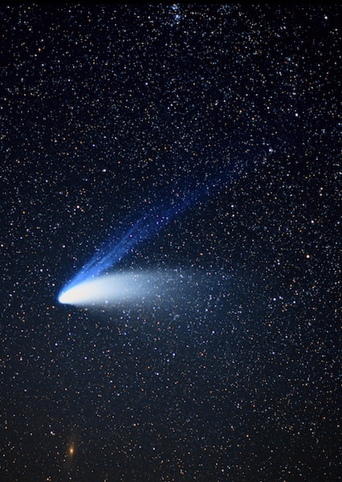

Cometas
Los cometas son cuerpos celestes que viajan por el espacio y están
formados principalmente por hielo, polvo y rocas. Muchas veces se les
llama “bolas de nieve sucia”, porque contienen una mezcla de agua congelada,
dióxido de carbono, metano, amoníaco y materiales rocosos.
A diferencia de los planetas, los cometas tienen órbitas muy alargadas
y pueden provenir de regiones lejanas del Sistema Solar, como el Cinturón
de Kuiper y la Nube de Oort.

Partes de un cometa
- Núcleo → el centro sólido, formado por hielo y roca.
- Coma → nube de gas y polvo que rodea al núcleo cuando se acerca al Sol.
- Cola de polvo → se forma cuando el viento solar empuja partículas de polvo, siempre apuntando en dirección contraria al Sol.
- Cola de gas (cola iónica) → formada por gases ionizados que brillan y también apuntan en dirección opuesta al Sol.
Características importantes
- Al acercarse al Sol, el calor hace que los hielos se sublimen (pasen de sólido a gas), generando las colas brillantes.
- Sus colas pueden llegar a medir millones de kilómetros.
- Tienen órbitas periódicas: algunos regresan cada pocos años (como el Cometa Halley, cada 76 años), mientras que otros tardan miles de años en volver o nunca regresan.
Volver al inicio